整
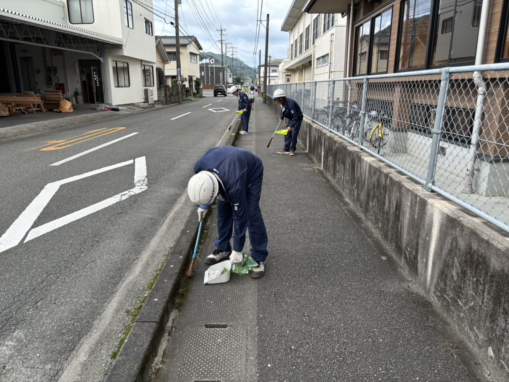
足元から整える、
地域への継続的な恩返し。
事業所周辺の道路清掃や河川の除草作業、公共施設の美化活動などを継続。自分たちの足元から地域の環境を整えることは、この街で事業を営む私たちの基本的な責任です。
大工であった先代の想いを継ぎ、誠実な仕事を積み重ねて六十年。豊岡建設のこれまでとこれからを、ご紹介します。
地域で必要とされるNo.1企業へ——。代表取締役 豊岡浩明よりご挨拶申し上げます。
先代の想いを継承し、次の時代を見据えて——。豊岡建設の歩み。
大工であった先代・豊岡清一により、豊岡清一建築設計事務所を創業。八代の地で、誠実な手仕事を出発点とする。
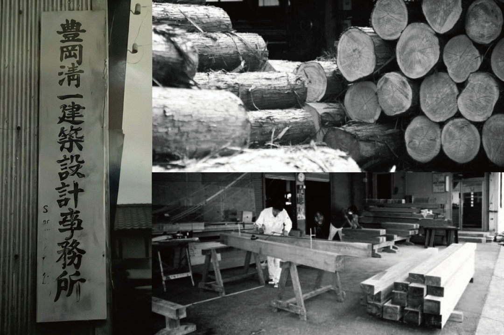
八代市豊原下町に有限会社豊岡建設を設立。同年、旧社屋を建設し住宅受注を拡大。
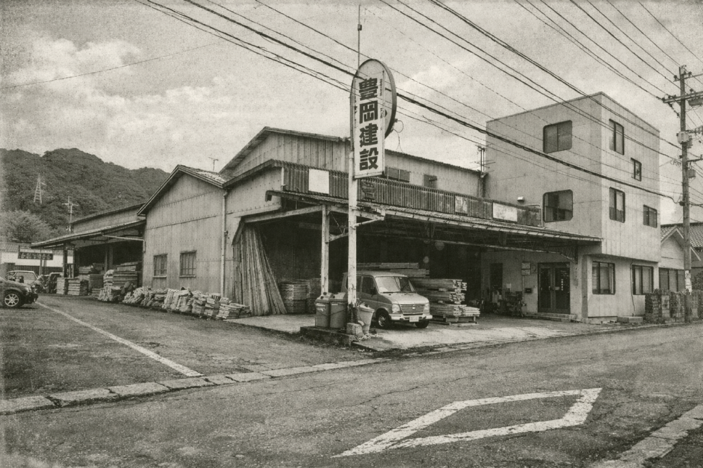
現代表取締役が入社後、非住宅部門を設立。八代ハーモニーホール屋外トイレ等を施工し、事業領域を拡大。
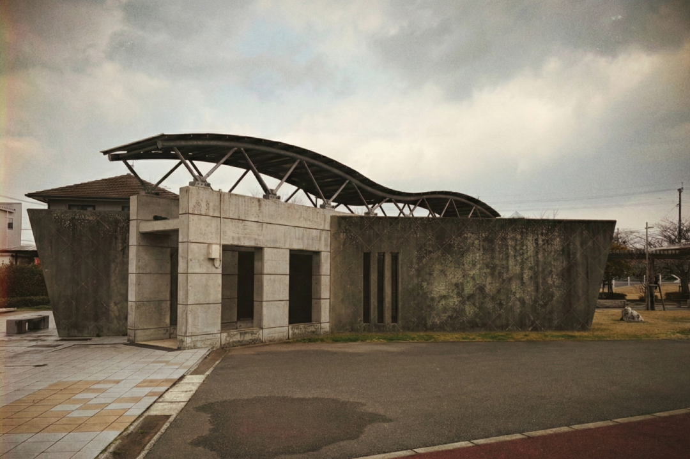
経営基盤強化のため株式会社へ移行。同年、豊岡浩明が代表取締役に就任。
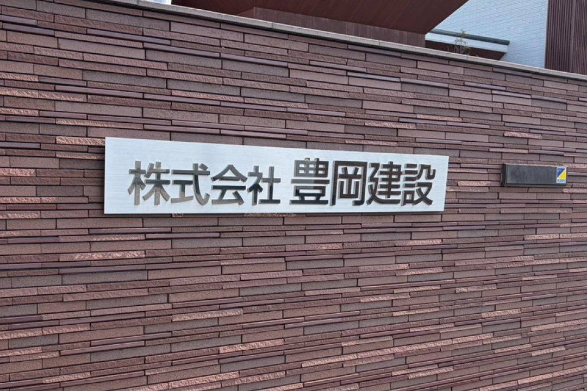
九州全土で甚大な被害を受けた熊本地震・九州豪雨の災害復旧に尽力。地元建設業の責任を、現場で果たし続ける。
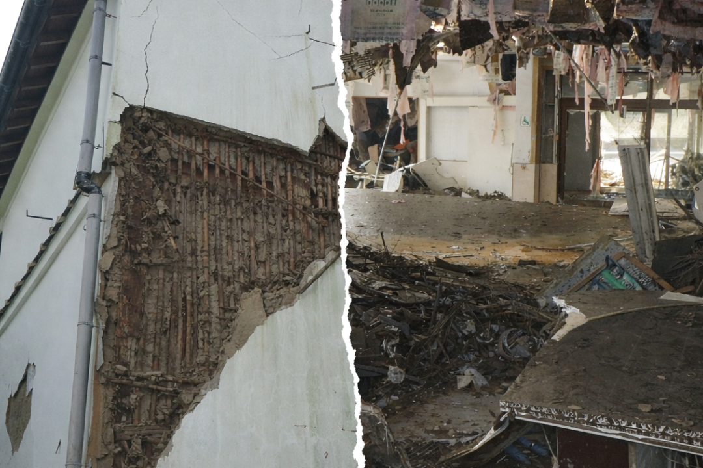
次の時代・世代を見据え、新社屋を新築。本社を八代市豊原下町3901番地に移転。
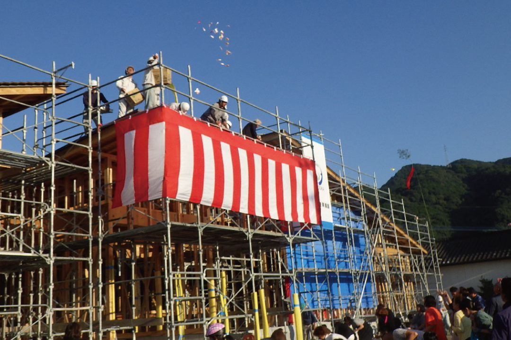
建設会社の責任とは、建物を残すことだけではない。地域とともにある暮らし全てを支えること——それが、私たちの考えです。
整

事業所周辺の道路清掃や河川の除草作業、公共施設の美化活動などを継続。自分たちの足元から地域の環境を整えることは、この街で事業を営む私たちの基本的な責任です。
繋
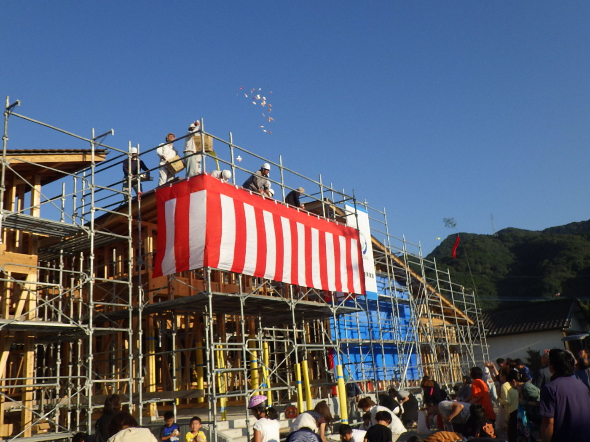
新社屋の上棟式で開催した「餅まき」には、近隣の皆さまや子どもたちが大勢集まってくださいました。古き良き建築文化を次世代へ伝えるとともに、地域の皆さまと完成の喜びを分かち合います。
守
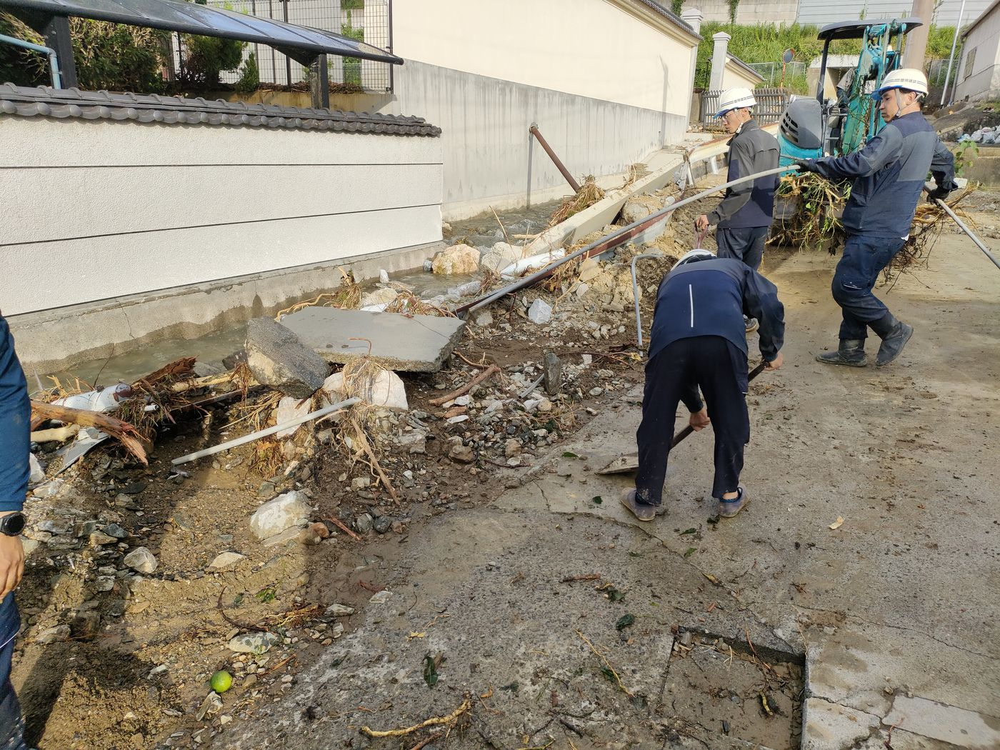
幾度もの自然災害を経験した熊本。地元建設業の使命として、インフラの迅速な復旧に総力を挙げて取り組んできました。皆様が安心して暮らせる「当たり前の日常」を守り続けます。
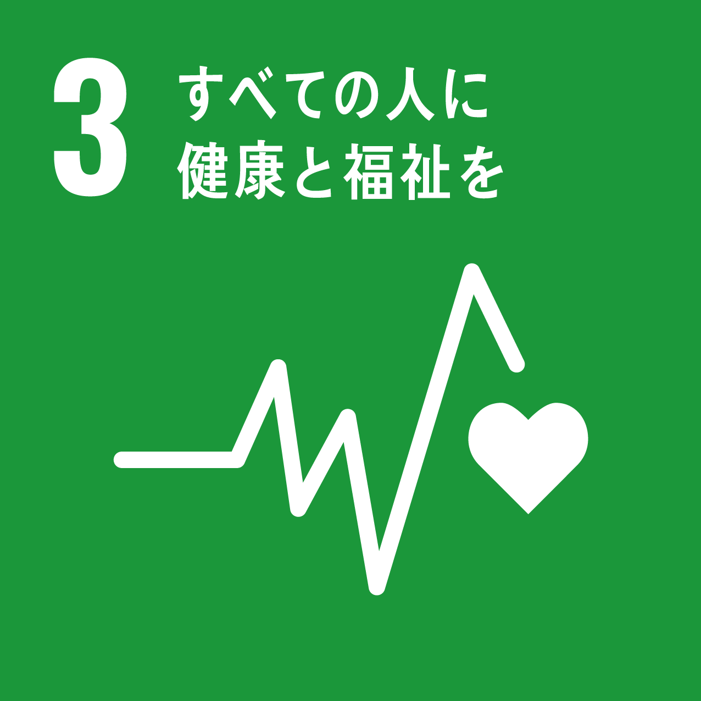
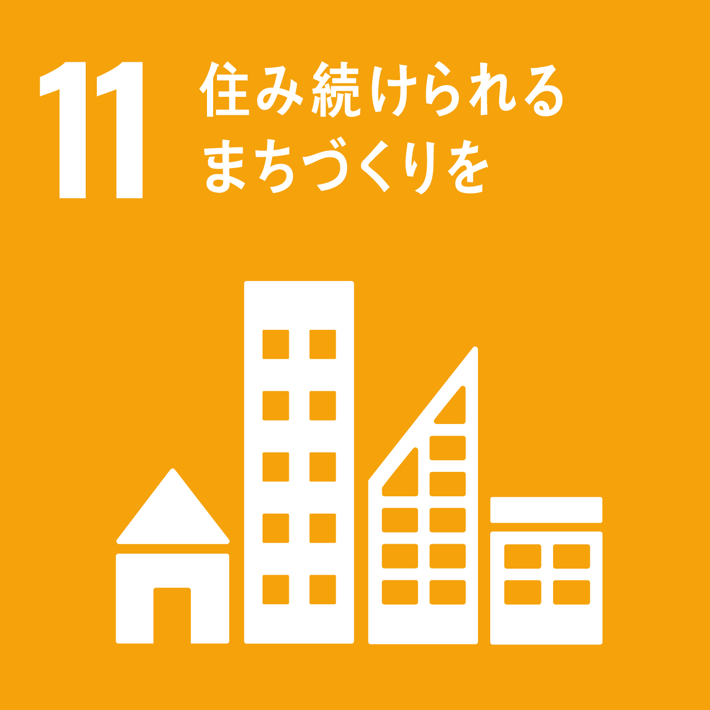
お問い合わせ
小さな住宅工事から大規模な公共建築まで、誠実にご対応します。